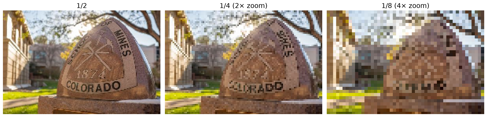
Lecture 04 — Image Pyramids
Lecture 4
Kaveh Fathian
Computer Science Department, Colorado School of Mines
Learning Objectives
By the end of this lecture, you should be able to:
- Explain why naïve downsampling can create aliasing.
- Describe how smoothing before downsampling reduces aliasing.
- Construct and interpret a Gaussian pyramid.
- Construct and interpret a Laplacian pyramid.
- Explain why Laplacian pyramids are useful for compression and reconstruction.
- Recognize how multi-scale representations appear in applications such as blending, tracking, detail enhancement, steerable pyramids, and wavelets.
This image is too big to fit on the screen!
How would you reduce it to half its size?
Naïve Image Downsampling
Keep every other row and column, then repeat.
import matplotlib.pyplot as plt
y2 = I[::2, ::2]
y4 = y2[::2, ::2]
y8 = y4[::2, ::2]
fig, ax = plt.subplots(1, 3, figsize=(8, 4),
gridspec_kw={"width_ratios": [4, 2, 1]})
for a, y, s in zip(ax, [y2, y4, y8], [2, 4, 8]):
a.imshow(color_display(y), cmap="gray", vmin=0, vmax=255,
interpolation="nearest")
a.set_title(f"1/{s}")
a.axis("off")
plt.tight_layout()
plt.show()Naïve Image Downsampling
Why is the 1/8 image so pixelated (and do you know what this effect is called)?
Reminder
 Camera / sensor hardware
Camera / sensor hardware
 CMOS sensor array
CMOS sensor array
Images are a discrete, or sampled, representation of a continuous world.
Sampling
A simple example: a sine wave
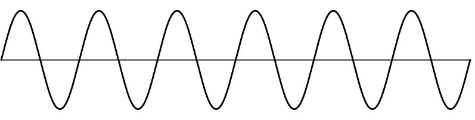
How would you discretize this signal?
Sampling
Sample the signal at regularly spaced locations.
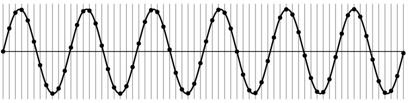
Sampling
The sampled signal consists of discrete values.
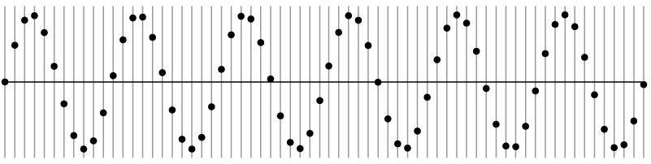
How many samples should I take?
Can I take as many samples as I want?
Sampling
The sampled signal consists of discrete values.
How many samples should I take?
Can I take as few samples as I want?
Undersampling
What happens when we take fewer samples?
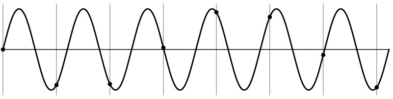
Unsurprising effect: information is lost.
Undersampling
A different signal can agree with the same samples.
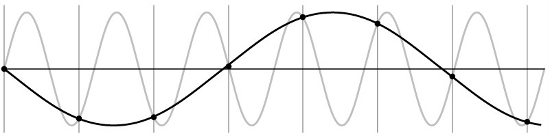
Unsurprising effect: information is lost.
Surprising effect: we can confuse the signal with one of lower frequency.
Undersampling
The same samples can also match a signal of higher frequency.
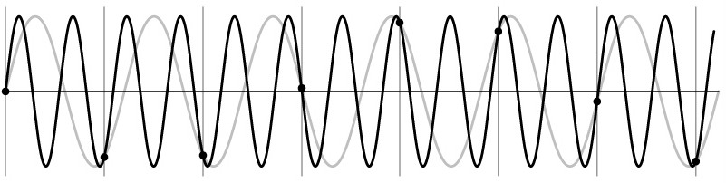
The samples alone do not uniquely identify the original signal.
We need an assumption about its highest frequency.
Aliasing
Aliasing: Undersampling disguises a signal as one of a lower frequency.
Aliasing in Textures
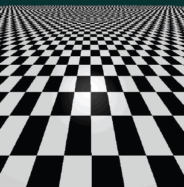
Aliasing in Photographs
These patterns are also known as moiré patterns.
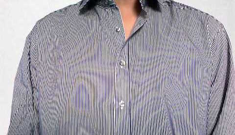
Striped fabric
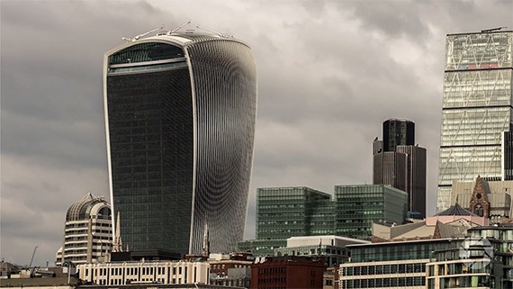
Building façades
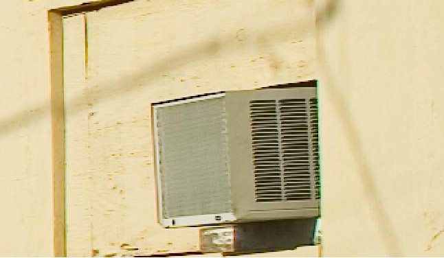
AC grille
Temporal Aliasing
- The camera records separate snapshots; we do not see the motion between frames.
- Follow the dot: the wheel is rotating clockwise
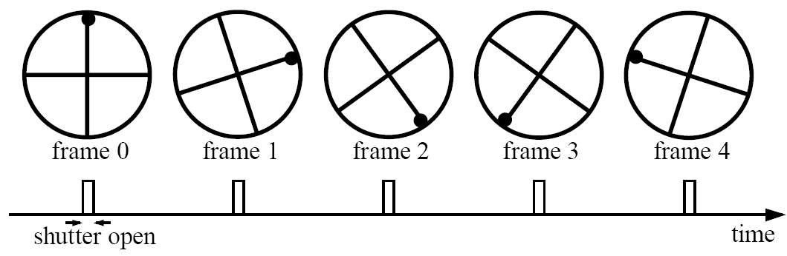
- Without the dot, the four spokes are indistinguishable.
- A large clockwise step produces the same spoke positions as a small counterclockwise step.
The wheel can therefore appear to rotate backward—an example of temporal aliasing.
Temporal Aliasing: Wagon-Wheel Effect
Temporal Aliasing: Helicopter Rotor
Anti-aliasing: Oversampling
How would you deal with aliasing?
Approach 1: Use more samples to represent fine detail.
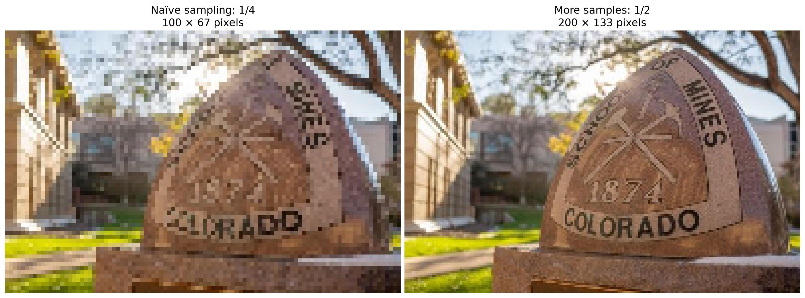
Anti-aliasing: Smoothing
Approach 2: Smooth the image before downsampling.
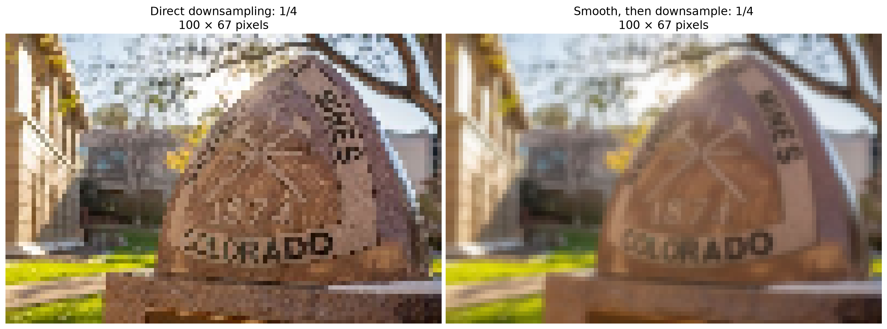
Some fine detail is lost, but aliasing artifacts are reduced.
How would you smooth a signal?
Better Image Downsampling
Apply a Gaussian filter, then keep every other row and column. Repeat.
import cv2
import matplotlib.pyplot as plt
y2g = cv2.GaussianBlur(I, (3,3), 2)[::2, ::2]
y4g = cv2.GaussianBlur(y2g, (3,3), 2)[::2, ::2]
y8g = cv2.GaussianBlur(y4g, (3,3), 2)[::2, ::2]
fig, ax = plt.subplots(1, 3, figsize=(8, 4),
gridspec_kw={"width_ratios": [4, 2, 1]})
for a, y, s in zip(ax, [y2g, y4g, y8g], [2, 4, 8]):
a.imshow(color_display(y), cmap="gray", vmin=0, vmax=255,
interpolation="nearest")
a.set_title(f"1/{s}")
a.axis("off")
plt.tight_layout()
plt.show()
plt.close(fig)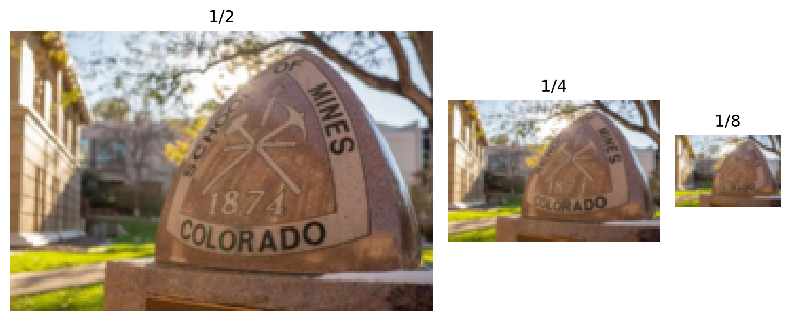
Comparison of Downsampling Methods
Naïve Image Downsampling:
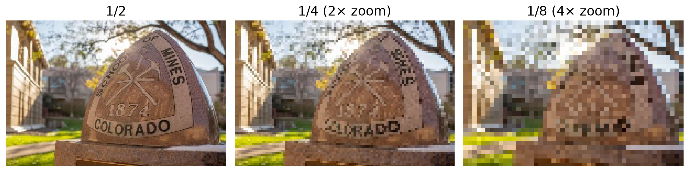
Smoothed Image Downsampling:
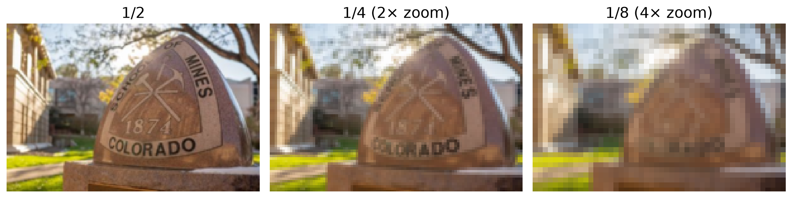
Anti-aliasing: How Much Is Enough?
How much smoothing is enough?
How many samples are enough?
Tip
Both depend on the Nyquist condition:
\[ f_s > 2f_{\max} \]
- \(f_s\): sampling rate.
- \(f_{\max}\): highest frequency.
We’ll see what this means soon.
Image Pyramids
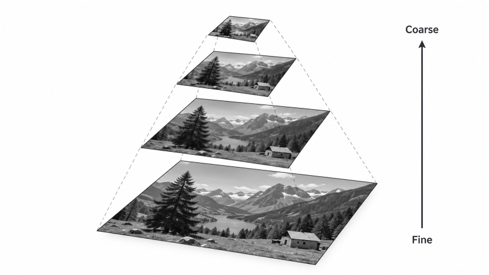
Why Use Image Pyramids?
Image compression
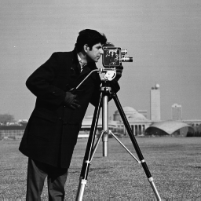
Texture mapping
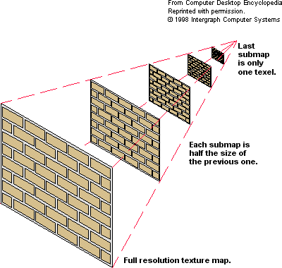
Image blending
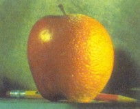
Denoising
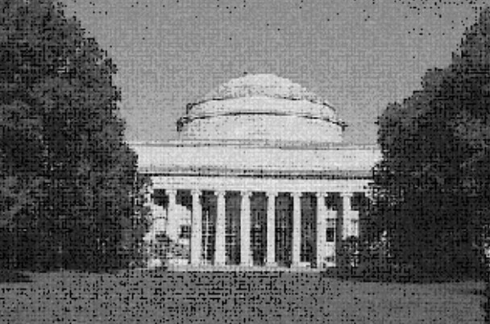
Focal stack compositing
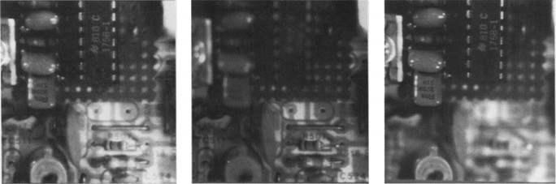
Multiscale detection
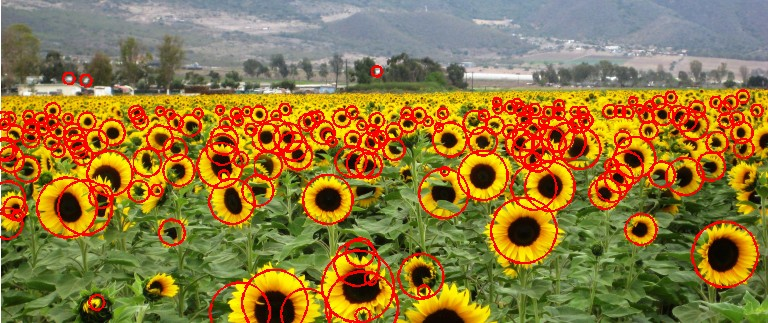
Multiscale registration
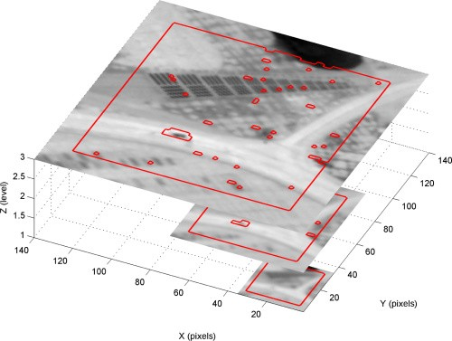
Also: Optical flow and feature tracking estimate motion from a coarse to fine paradigm.
Gaussian Pyramid
A Gaussian pyramid represents an image at progressively coarser spatial scales.
\[ G_0 = I, \qquad G_{i+1} = \operatorname{downsample}(h_G * G_i) \]
Construction
- Smooth the current image using a Gaussian kernel \(h_G\).
- Downsample by a factor of 2, e.g., keep every other row and column.
- Repeat until the desired minimum resolution is reached.
How many pixels does \(G_{i+1}\) have compared with \(G_i\)?
Approximately \(\frac{1}{4}\) as many pixels.
Why smooth first?
To reduce aliasing before downsampling.
Must the factor be 2?
No! Other scale factors are possible. A factor of 2 is conventional and is used by cv2.pyrDown().
Constructing a Gaussian Pyramid
cv2.pyrDown() combines Gaussian smoothing and downsampling.
import cv2
import matplotlib.pyplot as plt
G = [I]
for _ in range(3):
y = cv2.pyrDown(G[-1], borderType=cv2.BORDER_REFLECT)
G.append(y)
heights = [g.shape[0] for g in G[::-1]]
fig, ax = plt.subplots(4, 1, figsize=(10, 7.5),
gridspec_kw={"height_ratios": heights})
W = I.shape[1]
for a, i in zip(ax, range(3, -1, -1)):
h, w = G[i].shape[:2]
a.imshow(color_display(G[i]), cmap="gray", vmin=0, vmax=255,
interpolation="nearest",
extent=((W-w)/2, (W+w)/2, h, 0))
a.set_xlim(0, W)
a.text(1.02, .5, rf"$G_{i}$", fontsize=28, transform=a.transAxes, va="center")
a.axis("off")
fig.subplots_adjust(left=.03, right=.87, bottom=.02, top=.98, hspace=.12)
plt.show()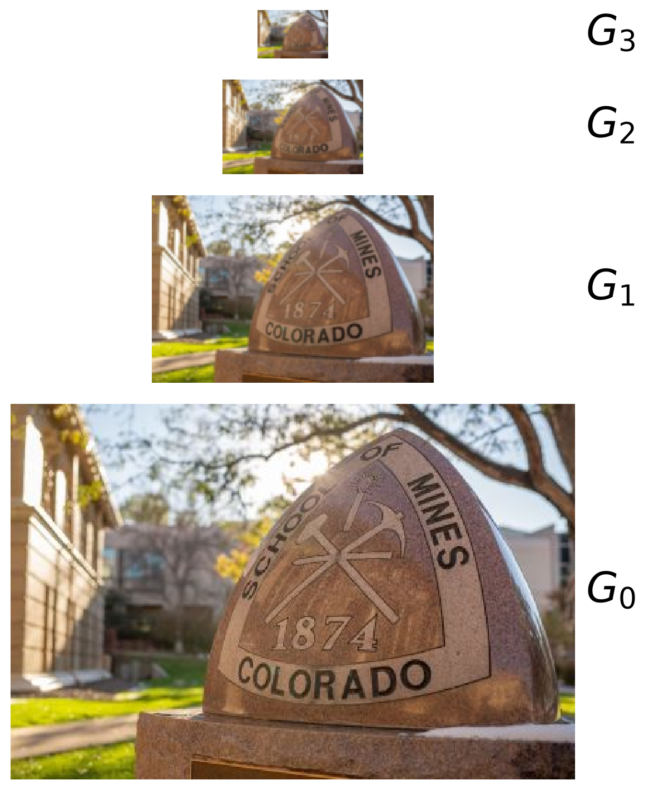
What Happens at Coarser Levels?
What happens to the details of the image?
- Fine details get smoothed out as we move to higher, coarser levels.
- Small structures and texture become less distinguishable.
What is preserved at the higher levels?
- Mostly large uniform regions and broad intensity variations.
- The overall shape and arrangement of large structures.
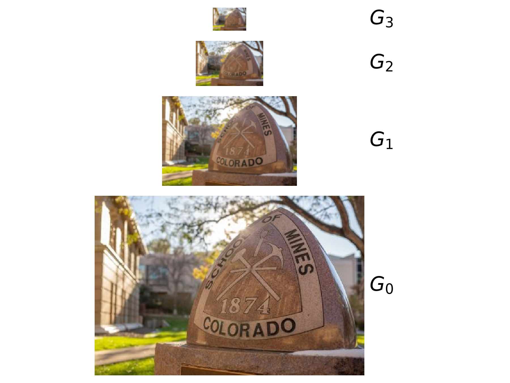
Can We Recover the Original Image?
How would you reconstruct the original image from an upper level image?
- Exact reconstruction is not possible!
- Smoothing suppresses fine details.
- Downsampling retains fewer samples.
- Enlarging the coarse image cannot recover the missing information!
Blurring Removes Fine Detail
Gaussian smoothing suppresses detail before we even downsample.
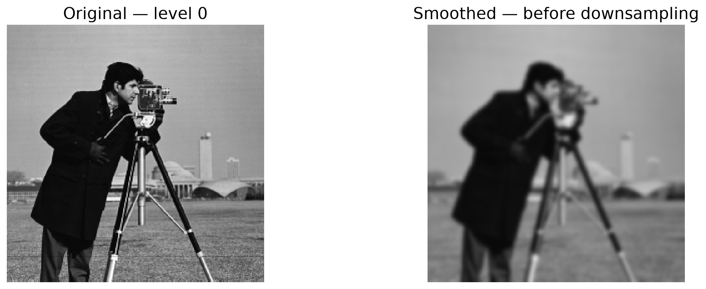
What does the residual look like?
The residual is the original image minus the smoothed image.
What Did Smoothing Remove?
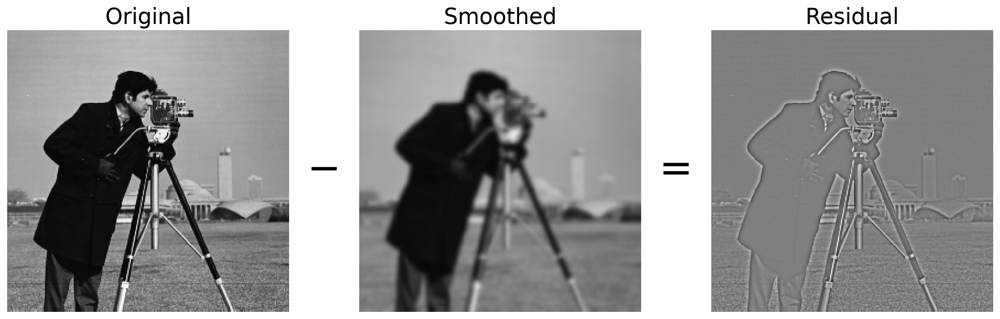
- The residual contains edges and fine texture suppressed by smoothing.
- Mid-gray represents zero; brighter and darker values represent positive and negative differences.
Can we make a pyramid that allows exact reconstruction?
Yes! Retain the residual information along with the coarse image. This is the idea behind a Laplacian pyramid.
Start with One Level
The original image equals an expanded coarse image plus a residual.
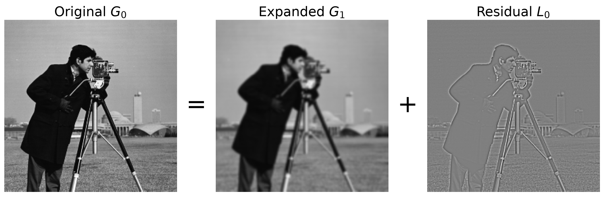
Do we need to store every blurred image as well as every residual?
No. We can recover each finer image from its residual and the next coarser image.
Laplacian Pyramid
Construction
Start with \(G_0 = I\). At each level:
- Smooth and downsample to obtain \(G_{i+1}\).
- Expand \(G_{i+1}\) back to the size of \(G_i\).
- Subtract to obtain the residual:
\[ L_i = G_i - \operatorname{expand}(G_{i+1}) \]
Repeat until the desired minimum resolution is reached.
Here, expand means upsample and filter, using cv2.pyrUp().
The sequence \(G_0, G_1, G_2, \ldots, G_n\) is the Gaussian pyramid.
The sequence \(L_0, L_1, \ldots, L_{n-1}, G_n\) is the Laplacian pyramid.
The Laplacian pyramid stores the detail needed to move back from one Gaussian level to the next finer level.
Upsampling: A Numerical Example
In Laplacian pyramid, expand means:
- Insert zeros between rows and columns to enlarge the pixel grid.
- Apply a Gaussian filter to interpolate pixel values.
Original image: A \(2\times2\) image.
\[ \begin{bmatrix} 32 & 96 \\ 160 & 224 \end{bmatrix} \]
Insert zeros: Double width & height.
\[ \begin{bmatrix} 32 & 0 & 96 & 0 \\ 0 & 0 & 0 & 0 \\ 160 & 0 & 224 & 0 \\ 0 & 0 & 0 & 0 \end{bmatrix} \]
Interpolation filter: cv2.pyrUp().
\[ \begin{bmatrix} 80 & 96 & 120 & 128 \\ 112 & 128 & 152 & 160 \\ 160 & 176 & 200 & 208 \\ 176 & 192 & 216 & 224 \end{bmatrix} \]
- The filter spreads pixel values into neighboring positions.
- Its weights are scaled to compensate for the inserted zeros.
Note
Filtering changes values at the original pixel positions too. The enlarged image is a smooth estimate of the finer image.
Laplacian Pyramid in OpenCV
Use floating-point arrays to preserve negative residual values.
G = [I.astype("float32")]
L = []
for _ in range(3):
y = cv2.pyrDown(G[-1], borderType=cv2.BORDER_REFLECT)
u = cv2.pyrUp(y, dstsize=G[-1].shape[:2][::-1])
L.append(G[-1] - u)
G.append(y)
L.append(G[-1]) # Keep the smallest image too
heights = [im.shape[0] for im in L[::-1]]
fig, ax = plt.subplots(4, 1, figsize=(10, 7.5),
gridspec_kw={"height_ratios": heights})
W = I.shape[1]
for a, i in zip(ax, range(3, -1, -1)):
h, w = L[i].shape[:2]
s = max(float(abs(L[i]).max()), 1)
lo, hi = (0, 255) if i == 3 else (-s, s)
a.imshow(color_display(L[i], lo, hi), cmap="gray", vmin=lo, vmax=hi,
interpolation="nearest",
extent=((W-w)/2, (W+w)/2, h, 0))
a.set_xlim(0, W)
label = r"$L_3=G_3$" if i == 3 else rf"$L_{i}$"
a.text(1.02, .5, label, fontsize=28,
transform=a.transAxes, va="center")
a.axis("off")
fig.subplots_adjust(left=.03, right=.76, bottom=.02,
top=.98, hspace=.12)
plt.show()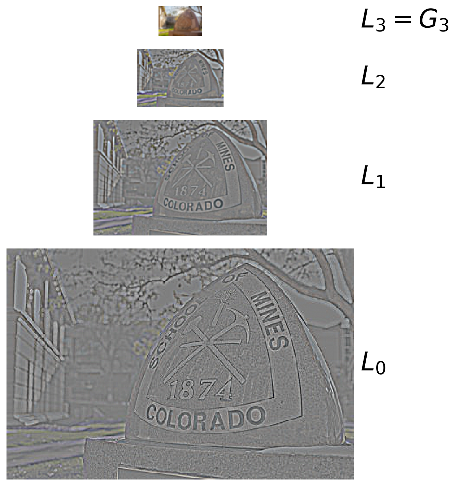
What Must We Store?
What do we need to reconstruct the original image?
1. The residuals
\[ L_0,\quad L_1,\quad L_2 \]
These retain the detail lost between consecutive Gaussian levels.
2. The smallest Gaussian image
\[ L_3 = G_3 \]
This provides the starting point for reconstruction.
The intermediate Gaussian images can also be recovered as needed.
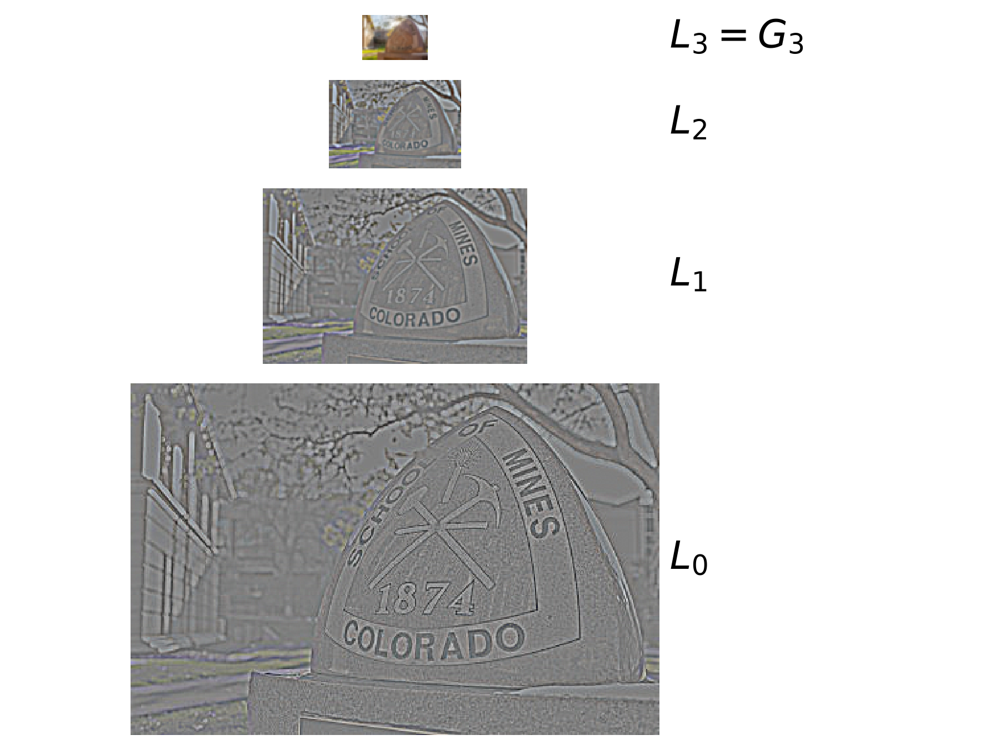
Residual contrast is scaled for display; mid-gray means zero.
Reconstruction uses the original signed arrays.
Reconstructing the Original Image
Start with the smallest image.
At each step:
- Expand to the next finer resolution.
- Add the residual at that level.
- Repeat until reaching the original resolution.
\[ G_i = \operatorname{expand}(G_{i+1}) + L_i \]
The residual restores the detail missing from the expanded image.
Keeping the residuals and smallest image allows exact reconstruction, apart from numerical roundoff.
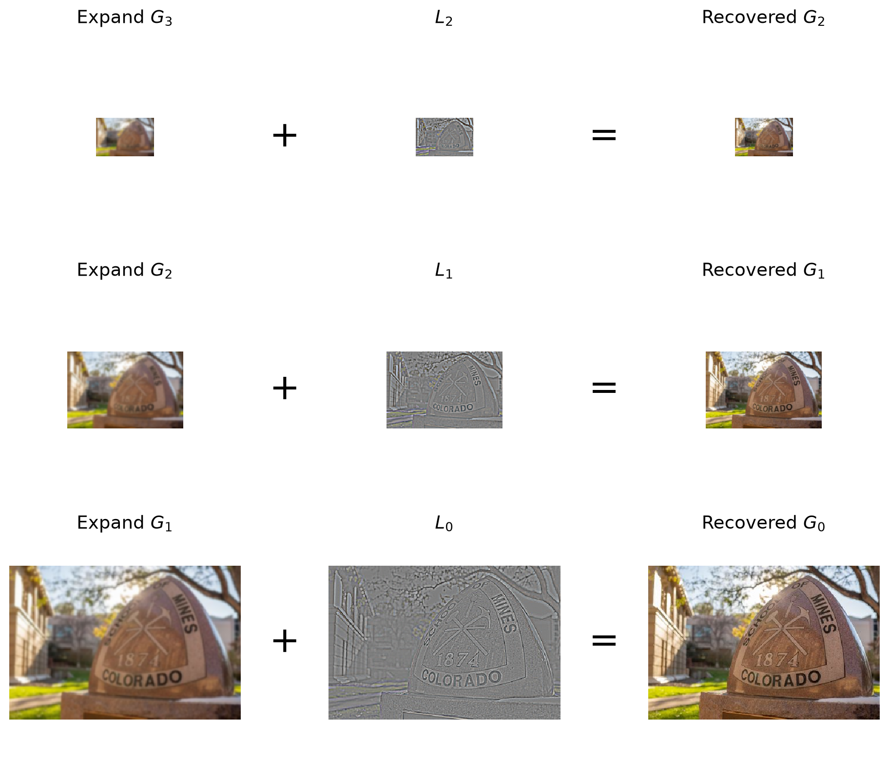
Gaussian vs. Laplacian Pyramid
Which pyramid takes more space to store?
Their raw storage is equal when using the same data type.
A Laplacian pyramid can require more bits per value to represent signed differences and preserve precision.
They take about 33% more than the original image:
\[ N + \frac{N}{4} + \frac{N}{16} + \cdots \approx \frac{4}{3}N \]
Gaussian pyramid
Laplacian pyramid
Laplacian Pyramids Useful for Compression
Raw array size and compressed file size are different.
- Laplacian levels store differences between scales.
- In smooth regions, these differences are often zero or close to zero.
Frequently occurring values can be encoded using fewer bits
- The residuals can be inexpensive to store after compression, even though the raw pyramid contains more values than the original image.
Lossy compression
- We can round small residuals to zero or store them with less precision.
- This reduces storage further, at the cost of some image detail.
- Actual savings depend on the image and the encoding method.
Where Are Image Pyramids Used?
| Application | How pyramids help |
|---|---|
| Panorama stitching and blending | Combine images at multiple scales to reduce visible seams. |
| Exposure fusion | Combine well-exposed regions from photographs taken at different exposures. |
| Motion estimation and feature tracking | Estimate motion at coarse resolutions, then refine it at finer resolutions. |
| Detail and local-contrast adjustment | Strengthen or suppress image details at selected spatial scales. |
Application: Selective Detail Enhancement
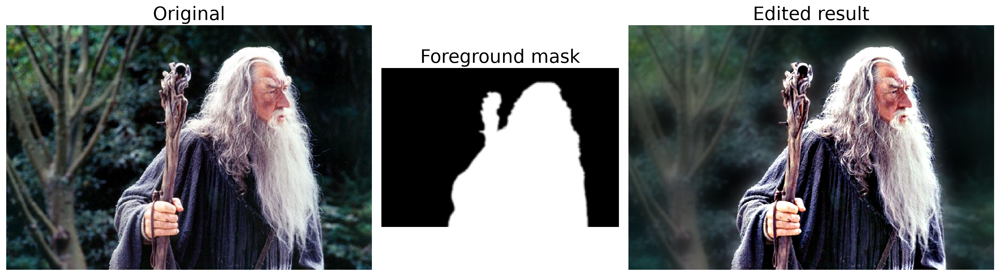
- Amplify foreground residuals, attenuate background residuals, then reconstruct:
\[ \widetilde{L}_i = \left[\alpha M_i+\beta(1-M_i)\right]L_i, \qquad \alpha=1.5,\quad \beta=0.25 \]
- \(M_i\) is the foreground mask at level \(i\): white selects the foreground, black selects the background, and gray gives a gradual transition.
Steerable Pyramids
- A multi-scale, multi-orientation image representation.
- Each pyramid level contains responses to structures at several orientations.
- A filter is steerable when the response at an arbitrary orientation can be synthesized from a small set of basis filters.
For first-order derivative basis responses:
\[ R_\theta = \cos(\theta)\,R_x + \sin(\theta)\,R_y \]
Applications
- Edge and contour analysis
- Texture and orientation analysis
- Image denoising and enhancement
- Image fusion
- Computational models of visual perception
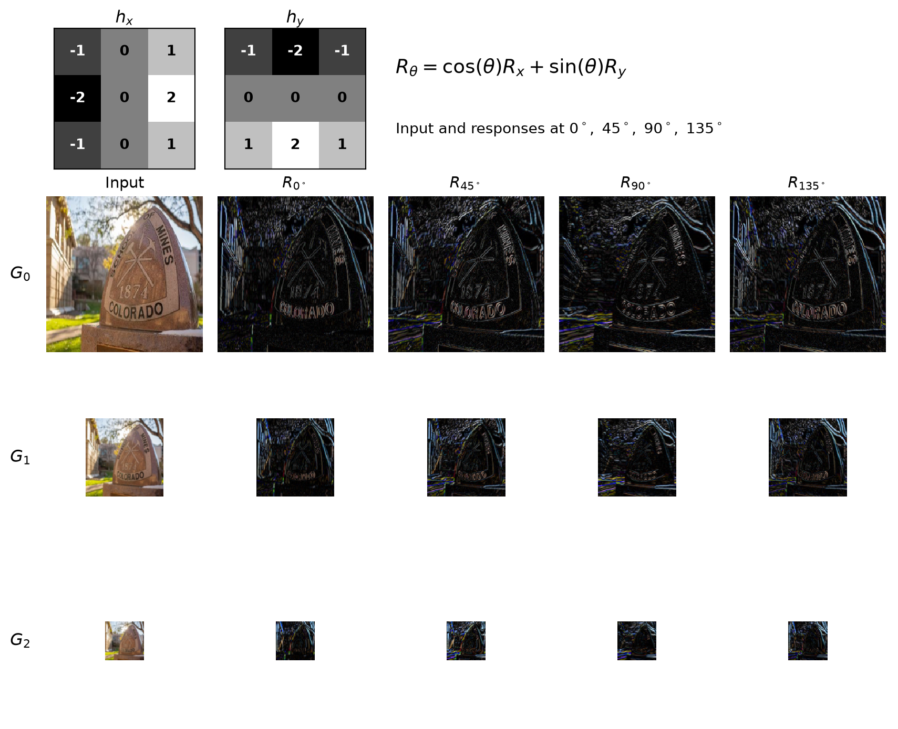
A simplified first-order steerable pyramid: rows correspond to Gaussian pyramid levels \(G_0\), \(G_1\), and \(G_2\), while columns show orientation-selective responses synthesized from the basis responses \(R_x\) and \(R_y\).
Wavelets
A wavelet transform separates an image into spatial-frequency subbands:
- LL: coarse approximation
- LH: horizontal detail
- HL: vertical detail
- HH: diagonal detail
The LL image can be decomposed again, producing a multi-scale representation.
Applications
- Image compression — e.g., JPEG 2000
- Image denoising
- Feature extraction
- Image fusion
- Medical and scientific imaging
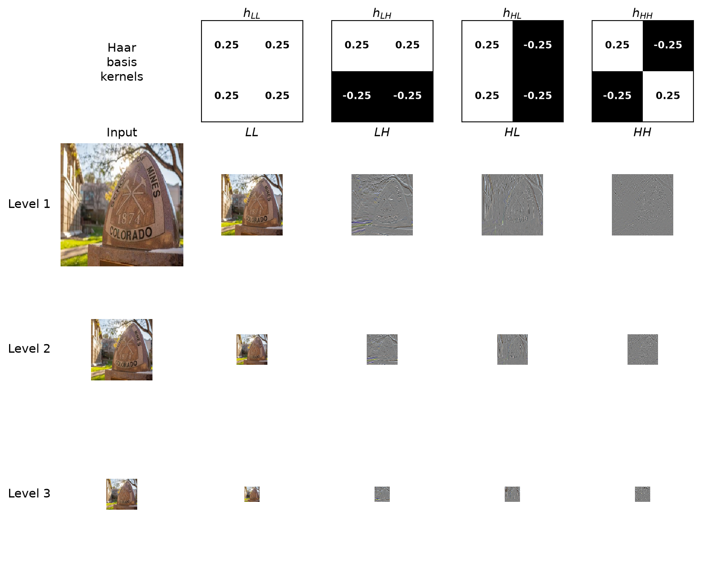
Haar wavelet decomposition: at each level, the input is separated into a low-frequency approximation LL and three directional detail bands. The LL band becomes the input to the next level.
Key Takeaways
- Downsampling reduces image size, but naïve subsampling can discard important structure and create aliasing.
- Anti-aliasing smooths the image before downsampling so high-frequency detail does not fold into lower frequencies.
- A Gaussian pyramid stores progressively smaller, smoother versions of an image.
- A Laplacian pyramid stores what is lost between Gaussian pyramid levels: the image details or residuals.
- Laplacian pyramids can reconstruct the original image when the residuals and coarsest image are preserved.
- Multi-scale image representations are widely used in compression, blending, tracking, enhancement, steerable pyramids, and wavelets.
Computer Vision; Colorado School of Mines | Kaveh Fathian